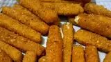

Fried Cheese

These is an easy, cost-efficient way to make home-made fried cheese
sticks. Taste just wonderful, light crispiness. More for your dollar and
easily stored in the freezer for when you have a craving. I make 2
batches, one for the 'now' and one for later. Serve with your favorite
dipping sauce.
Ingredients
- 24 (1 ounce) sticks string cheese
- 5 eggs, beaten
- 3 cups Italian seasoned bread crumbs
- 1 quart vegetable oil for frying, or as needed
Steps
-
Remove string cheese sticks from plastic wrappings and cut the strings
in half crosswise.
-
Line a baking sheet with parchment paper. Place eggs in a bowl and bread
crumbs into a large shallow bowl.
-
Dip cheese stick halves into egg and roll in bread crumbs to completely
coat the sticks; place breaded cheese sticks onto the prepared baking
sheet. Allow cheese sticks to stand at room temperature for about 5
minutes to set, and repeat dipping in egg and bread crumbs to form a
thick coating. Freeze breaded cheese sticks for at least 2 hours.
-
Heat oil in a deep-fryer or large saucepan to 350 degrees F (175 degrees
C).
-
Deep fry cheese sticks, a few at a time, until the coating is golden
brown and crisp and the cheese is soft, 5 to 8 minutes. Let sticks drain
on paper towels; cool slightly and serve warm.